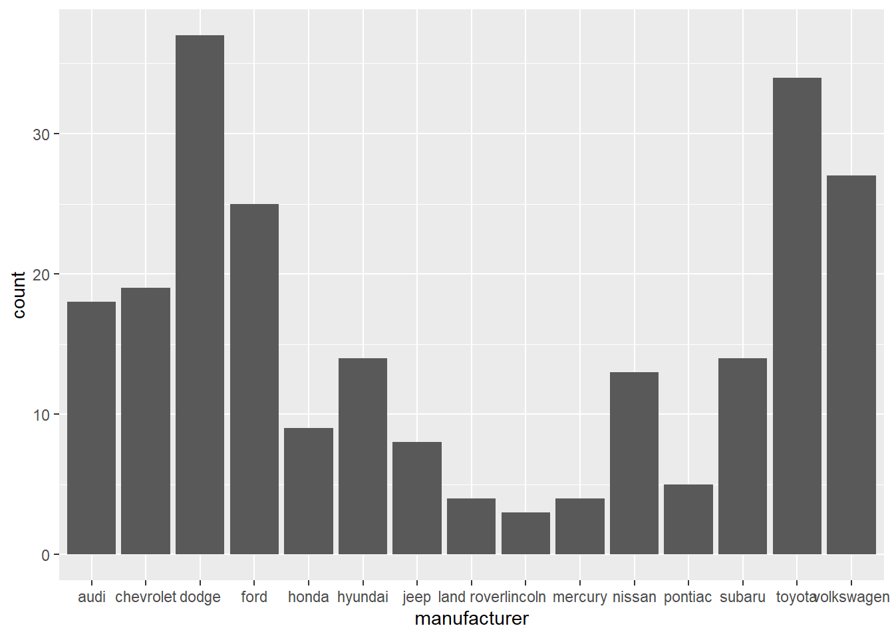

fct_relevel()
fct_rev()
fct_inorder()
fct_infreq()
fct_collapse()
fct_lump_n()
fct_lump_min()Factors using forcats package
We will use the mpg data to show the usage of the functions from forcats package (one of the members of tidyverse):
library(tidyverse)
glimpse(mpg)
#> Rows: 234
#> Columns: 11
#> $ manufacturer <chr> "audi", "audi", "audi", "audi", "audi", "audi", "audi", "…
#> $ model <chr> "a4", "a4", "a4", "a4", "a4", "a4", "a4", "a4 quattro", "…
#> $ displ <dbl> 1.8, 1.8, 2.0, 2.0, 2.8, 2.8, 3.1, 1.8, 1.8, 2.0, 2.0, 2.…
#> $ year <int> 1999, 1999, 2008, 2008, 1999, 1999, 2008, 1999, 1999, 200…
#> $ cyl <int> 4, 4, 4, 4, 6, 6, 6, 4, 4, 4, 4, 6, 6, 6, 6, 6, 6, 8, 8, …
#> $ trans <chr> "auto(l5)", "manual(m5)", "manual(m6)", "auto(av)", "auto…
#> $ drv <chr> "f", "f", "f", "f", "f", "f", "f", "4", "4", "4", "4", "4…
#> $ cty <int> 18, 21, 20, 21, 16, 18, 18, 18, 16, 20, 19, 15, 17, 17, 1…
#> $ hwy <int> 29, 29, 31, 30, 26, 26, 27, 26, 25, 28, 27, 25, 25, 25, 2…
#> $ fl <chr> "p", "p", "p", "p", "p", "p", "p", "p", "p", "p", "p", "p…
#> $ class <chr> "compact", "compact", "compact", "compact", "compact", "c…We pull the drv column from mpg tibble and review the difference between character vector and factor.
drvtype <- mpg$drv
typeof(drvtype)
#> [1] "character"
drv_f <- factor(drvtype)
typeof(drvtype)
#> [1] "character"
typeof(drv_f)
#> [1] "integer"
unclass(drv_f)
#> [1] 2 2 2 2 2 2 2 1 1 1 1 1 1 1 1 1 1 1 3 3 3 3 3 3 3 3 3 3 1 1 1 1 2 2 2 2 2
#> [38] 2 2 2 2 2 2 2 2 2 2 2 1 1 1 1 1 1 1 1 1 1 1 1 1 1 1 1 1 1 1 1 1 1 1 1 1 1
#> [75] 3 3 3 1 1 1 1 1 1 1 1 1 1 1 1 1 3 3 3 3 3 3 3 3 3 2 2 2 2 2 2 2 2 2 2 2 2
#> [112] 2 2 2 2 2 2 2 2 2 2 2 1 1 1 1 1 1 1 1 1 1 1 1 3 3 3 1 1 1 1 2 2 2 2 2 2 2
#> [149] 2 2 1 1 1 1 2 2 2 2 2 1 1 1 1 1 1 1 1 1 1 1 1 1 1 1 1 1 1 1 1 2 2 2 2 2 2
#> [186] 2 2 2 2 2 2 2 2 2 2 2 2 2 1 1 1 1 1 1 1 1 1 2 2 2 2 2 2 2 2 2 2 2 2 2 2 2
#> [223] 2 2 2 2 2 2 2 2 2 2 2 2
#> attr(,"levels")
#> [1] "4" "f" "r"fct_inorder(), fct_infreq(), fct_relevel
# Convert character to factor
factor(drvtype)
#> [1] f f f f f f f 4 4 4 4 4 4 4 4 4 4 4 r r r r r r r r r r 4 4 4 4 f f f f f
#> [38] f f f f f f f f f f f 4 4 4 4 4 4 4 4 4 4 4 4 4 4 4 4 4 4 4 4 4 4 4 4 4 4
#> [75] r r r 4 4 4 4 4 4 4 4 4 4 4 4 4 r r r r r r r r r f f f f f f f f f f f f
#> [112] f f f f f f f f f f f 4 4 4 4 4 4 4 4 4 4 4 4 r r r 4 4 4 4 f f f f f f f
#> [149] f f 4 4 4 4 f f f f f 4 4 4 4 4 4 4 4 4 4 4 4 4 4 4 4 4 4 4 4 f f f f f f
#> [186] f f f f f f f f f f f f f 4 4 4 4 4 4 4 4 4 f f f f f f f f f f f f f f f
#> [223] f f f f f f f f f f f f
#> Levels: 4 f r
# Convert character to factor, by the order they appear
fct_inorder(drvtype)
#> [1] f f f f f f f 4 4 4 4 4 4 4 4 4 4 4 r r r r r r r r r r 4 4 4 4 f f f f f
#> [38] f f f f f f f f f f f 4 4 4 4 4 4 4 4 4 4 4 4 4 4 4 4 4 4 4 4 4 4 4 4 4 4
#> [75] r r r 4 4 4 4 4 4 4 4 4 4 4 4 4 r r r r r r r r r f f f f f f f f f f f f
#> [112] f f f f f f f f f f f 4 4 4 4 4 4 4 4 4 4 4 4 r r r 4 4 4 4 f f f f f f f
#> [149] f f 4 4 4 4 f f f f f 4 4 4 4 4 4 4 4 4 4 4 4 4 4 4 4 4 4 4 4 f f f f f f
#> [186] f f f f f f f f f f f f f 4 4 4 4 4 4 4 4 4 f f f f f f f f f f f f f f f
#> [223] f f f f f f f f f f f f
#> Levels: f 4 r
# Convert character to factor, by the frequency (largest first)
fct_infreq(drvtype)
#> [1] f f f f f f f 4 4 4 4 4 4 4 4 4 4 4 r r r r r r r r r r 4 4 4 4 f f f f f
#> [38] f f f f f f f f f f f 4 4 4 4 4 4 4 4 4 4 4 4 4 4 4 4 4 4 4 4 4 4 4 4 4 4
#> [75] r r r 4 4 4 4 4 4 4 4 4 4 4 4 4 r r r r r r r r r f f f f f f f f f f f f
#> [112] f f f f f f f f f f f 4 4 4 4 4 4 4 4 4 4 4 4 r r r 4 4 4 4 f f f f f f f
#> [149] f f 4 4 4 4 f f f f f 4 4 4 4 4 4 4 4 4 4 4 4 4 4 4 4 4 4 4 4 f f f f f f
#> [186] f f f f f f f f f f f f f 4 4 4 4 4 4 4 4 4 f f f f f f f f f f f f f f f
#> [223] f f f f f f f f f f f f
#> Levels: f 4 r
#We can check the counts using: mpg %>% count(drv) %>% arrange(desc(n))
# Convert character to factor, specify the order
drv_f <- factor(drvtype,
levels = c("f", "r", "4"))
drv_f
#> [1] f f f f f f f 4 4 4 4 4 4 4 4 4 4 4 r r r r r r r r r r 4 4 4 4 f f f f f
#> [38] f f f f f f f f f f f 4 4 4 4 4 4 4 4 4 4 4 4 4 4 4 4 4 4 4 4 4 4 4 4 4 4
#> [75] r r r 4 4 4 4 4 4 4 4 4 4 4 4 4 r r r r r r r r r f f f f f f f f f f f f
#> [112] f f f f f f f f f f f 4 4 4 4 4 4 4 4 4 4 4 4 r r r 4 4 4 4 f f f f f f f
#> [149] f f 4 4 4 4 f f f f f 4 4 4 4 4 4 4 4 4 4 4 4 4 4 4 4 4 4 4 4 f f f f f f
#> [186] f f f f f f f f f f f f f 4 4 4 4 4 4 4 4 4 f f f f f f f f f f f f f f f
#> [223] f f f f f f f f f f f f
#> Levels: f r 4
# Convert character to factor, specify the order
mpg %>%
mutate(drv = fct_relevel(drv, c("f", "r", "4"))) %>%
arrange(drv)
#> # A tibble: 234 × 11
#> manufacturer model displ year cyl trans drv cty hwy fl class
#> <chr> <chr> <dbl> <int> <int> <chr> <fct> <int> <int> <chr> <chr>
#> 1 audi a4 1.8 1999 4 auto(l5) f 18 29 p comp…
#> 2 audi a4 1.8 1999 4 manual(m… f 21 29 p comp…
#> 3 audi a4 2 2008 4 manual(m… f 20 31 p comp…
#> 4 audi a4 2 2008 4 auto(av) f 21 30 p comp…
#> 5 audi a4 2.8 1999 6 auto(l5) f 16 26 p comp…
#> 6 audi a4 2.8 1999 6 manual(m… f 18 26 p comp…
#> 7 audi a4 3.1 2008 6 auto(av) f 18 27 p comp…
#> 8 chevrolet malibu 2.4 1999 4 auto(l4) f 19 27 r mids…
#> 9 chevrolet malibu 2.4 2008 4 auto(l4) f 22 30 r mids…
#> 10 chevrolet malibu 3.1 1999 6 auto(l4) f 18 26 r mids…
#> # ℹ 224 more rows
# drvtype %>%
# fct_relevel(., c("f", "r", "4")) %>%
# fct_rev()
# We use fct_rev() to reverse the order of the levels
mpg %>%
mutate(
drv = drv %>%
fct_relevel(., c("f", "r", "4")) %>%
fct_rev()
) %>%
arrange(drv)
#> # A tibble: 234 × 11
#> manufacturer model displ year cyl trans drv cty hwy fl class
#> <chr> <chr> <dbl> <int> <int> <chr> <fct> <int> <int> <chr> <chr>
#> 1 audi a4 quattro 1.8 1999 4 manu… 4 18 26 p comp…
#> 2 audi a4 quattro 1.8 1999 4 auto… 4 16 25 p comp…
#> 3 audi a4 quattro 2 2008 4 manu… 4 20 28 p comp…
#> 4 audi a4 quattro 2 2008 4 auto… 4 19 27 p comp…
#> 5 audi a4 quattro 2.8 1999 6 auto… 4 15 25 p comp…
#> 6 audi a4 quattro 2.8 1999 6 manu… 4 17 25 p comp…
#> 7 audi a4 quattro 3.1 2008 6 auto… 4 17 25 p comp…
#> 8 audi a4 quattro 3.1 2008 6 manu… 4 15 25 p comp…
#> 9 audi a6 quattro 2.8 1999 6 auto… 4 15 24 p mids…
#> 10 audi a6 quattro 3.1 2008 6 auto… 4 17 25 p mids…
#> # ℹ 224 more rows
mpg$drv
#> [1] "f" "f" "f" "f" "f" "f" "f" "4" "4" "4" "4" "4" "4" "4" "4" "4" "4" "4"
#> [19] "r" "r" "r" "r" "r" "r" "r" "r" "r" "r" "4" "4" "4" "4" "f" "f" "f" "f"
#> [37] "f" "f" "f" "f" "f" "f" "f" "f" "f" "f" "f" "f" "4" "4" "4" "4" "4" "4"
#> [55] "4" "4" "4" "4" "4" "4" "4" "4" "4" "4" "4" "4" "4" "4" "4" "4" "4" "4"
#> [73] "4" "4" "r" "r" "r" "4" "4" "4" "4" "4" "4" "4" "4" "4" "4" "4" "4" "4"
#> [91] "r" "r" "r" "r" "r" "r" "r" "r" "r" "f" "f" "f" "f" "f" "f" "f" "f" "f"
#> [109] "f" "f" "f" "f" "f" "f" "f" "f" "f" "f" "f" "f" "f" "f" "4" "4" "4" "4"
#> [127] "4" "4" "4" "4" "4" "4" "4" "4" "r" "r" "r" "4" "4" "4" "4" "f" "f" "f"
#> [145] "f" "f" "f" "f" "f" "f" "4" "4" "4" "4" "f" "f" "f" "f" "f" "4" "4" "4"
#> [163] "4" "4" "4" "4" "4" "4" "4" "4" "4" "4" "4" "4" "4" "4" "4" "4" "4" "f"
#> [181] "f" "f" "f" "f" "f" "f" "f" "f" "f" "f" "f" "f" "f" "f" "f" "f" "f" "f"
#> [199] "4" "4" "4" "4" "4" "4" "4" "4" "4" "f" "f" "f" "f" "f" "f" "f" "f" "f"
#> [217] "f" "f" "f" "f" "f" "f" "f" "f" "f" "f" "f" "f" "f" "f" "f" "f" "f" "f"fct_lump_n(), fct_lump_min, and fct_infreq()
mpg %>%
ggplot(aes(x = manufacturer)) +
geom_bar()
# Bar plot with the top 5 (based on counts)
mpg %>%
mutate(manufacturer = fct_lump_n(manufacturer, n = 5, other_level = "Other mfrs")) %>%
ggplot(aes(x = manufacturer)) +
geom_bar()
mpg %>%
mutate(manufacturer = manufacturer %>%
fct_lump_n(., n = 5, other_level = "Other mfrs") %>%
fct_infreq()) %>%
ggplot(aes(x = manufacturer)) +
geom_bar()
# Bar plot with the counts above 20
mpg %>%
mutate(manufacturer = fct_lump_min(manufacturer, min = 20)) %>%
ggplot(aes(x = manufacturer)) +
geom_bar()
mpg %>%
mutate(manufacturer = manufacturer %>%
fct_lump_min(., min = 20) %>%
fct_infreq()
) %>%
mutate(manufacturer = fct_relevel(manufacturer, "Other", after = Inf)) %>%
ggplot(aes(x = manufacturer)) +
geom_bar()fct_collapse
mpg <- mpg %>%
mutate(trans_type = fct_collapse(trans,
auto = c("auto(l5)", "auto(av)", "auto(l4)", "auto(s6)" ,
"auto(l3)", "auto(l6)", "auto(s4)", "auto(s5)"),
manual = c("manual(m5)", "manual(m6)")
)
)
mpg %>% count(trans_type)
#> # A tibble: 2 × 2
#> trans_type n
#> <fct> <int>
#> 1 auto 157
#> 2 manual 77